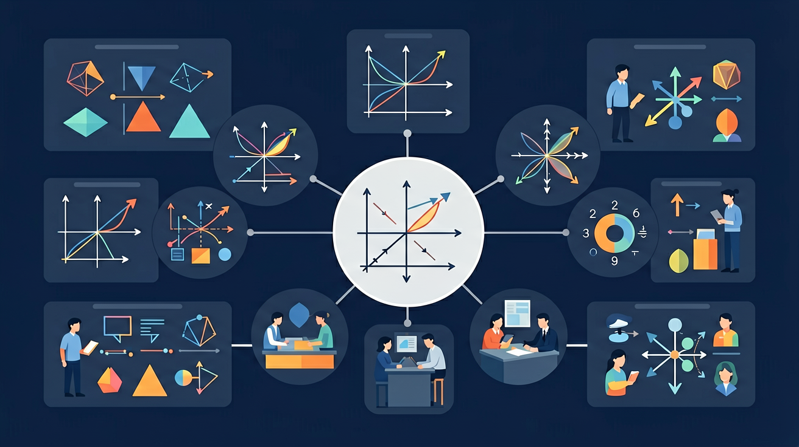

❓ 为什么正比例函数的图像必须过原点？
❓ k和b傻傻分不清，为啥y=kx没有b？
❓ 学这个能干嘛？买菜又用不上！
学完这一课，这些问题你都能自信地回答。
🎯 能说出正比例函数y=kx的定义及k≠0的条件
🎯 能判断具体问题中两个量是否成正比例关系
🎯 能根据k值分析函数图像增减性及倾斜程度

1. 下列哪个式子表示 y 与 x 成正比例关系？
2. 如果 y = kx，当 x=2 时 y=6，则 k = ？
3. 正比例函数的图象一定经过哪个点？
其中：
✅ 是正比例函数
❌ 不是正比例函数
🏋️ 即时练习：下列函数中，是正比例函数的是？
| k的范围 | 图象位置 | 变化趋势 | 所在象限 |
|---|---|---|---|
| k > 0 | 过一、三象限 | y随x增大而增大 | 第一、三象限 |
| k < 0 | 过二、四象限 | y随x增大而减小 | 第二、四象限 |
| |k|越大 | 直线越陡 | 变化越快 | — |
🏋️ 即时练习：正比例函数 y = -3x 的图象经过的象限是？
题目：出租车按 2.5 元/km 计费，设路程为 x km，费用为 y 元。
（1）写出 y 与 x 的函数关系式
解：y = 2.5x（x > 0）
（2）乘坐 8 km，需要多少钱？
解：y = 2.5 × 8 = 20（元）
🏋️ 即时练习：某工厂每小时生产零件 50 个，设生产了 x 小时，共生产 y 个零件。y 与 x 的关系是？
某共享单车平台想设计一个计费方案：骑行费用 y（元）与骑行时间 x（分钟）成正比例关系，且骑行 30 分钟收费 3 元。
1. 正比例函数 y = kx，当 k = -4，x = 3 时，y = ？
2. 若正比例函数 y=kx 的图象过点 (2, -6)，则 k = ？
3. 在坐标系中，正比例函数 y = 2x 和 y = 0.5x 的图象相比，y = 2x 的图象更？
4. 正比例函数中，如果 x 增大，y 一定增大吗？
正比例函数的图像是一条通过原点的直线。这条直线的斜率等于比例系数 k。当 k > 0 时，直线从左下方向右上方倾斜；当 k < 0 时，直线从左上方向右下方倾斜。例如，函数 y = 2x 的图像是一条通过原点且斜率为 2 的直线，而 y = -3x 的图像则是一条斜率为 -3 的直线。通过绘制图像，可以直观地看出 y 与 x 之间的比例关系。在实际应用中，图像可以帮助我们快速判断两个变量是否成正比例关系。
正比例函数具有以下性质：1. 函数图像必过原点 (0,0)。2. 当 x 增大时，y 也按比例增大（k > 0）或减小（k < 0）。3. 函数的增减性由比例系数 k 决定：k > 0 时，函数单调递增；k < 0 时，函数单调递减。例如，在物理学中，弹簧的伸长量 x 与所受力 F 之间的关系（胡克定律 F = kx）就是一个正比例函数，其中 k 是弹簧的劲度系数。当 k > 0 时，弹簧的伸长量与受力成正比。
正比例函数的图像是一条经过原点的直线，其斜率等于比例系数k。当k>0时，直线从左下方向右上方倾斜，表示y随x的增大而增大；当k<0时，直线从左上方向右下方倾斜，表示y随x的增大而减小。例如，匀速运动中路程与时间的关系s=vt（v为速度），若v=60km/h，则图像是一条斜率为60的直线，每增加1小时，路程增加60km。再如，弹簧的伸长量F=kx（k为弹性系数），若k=2N/cm，则图像斜率为2，伸长量每增加1cm，拉力增加2N。
先独立作答，再点选项查看对错与错因。
下列函数中，属于正比例函数的是
若正比例函数y=kx经过点(2,6)，则k值为
关于正比例函数y=-4x的图像描述正确的是
正比例函数的一般式为y=____x（k≠0）
答案：k
标准形式y=kx中k为比例系数
若y与x成正比例，当x=3时y=12，则当x=____时y=20
答案：5
先求得k=4，再解20=4x
正比例函数与反比例函数的核心区别是
用弹簧和砝码设计实验，记录不同质量下的伸长量
解析y=kx中k的放大器作用，x每变化1单位，y就被放大k倍
k是固定伸缩率，像复印机的缩放比例
对比y=kx与y=kx+b，少了的b就是截距的缺席
图像是穿过原点的直线，k决定楼梯陡峭度
解释弹簧伸长量与砝码质量的关系模型
✅ 强调形式必须为y=kx且无常数项
💡 受一次函数概念干扰
✅ 讨论k=0时退化为y=0的特殊情况
💡 默认系数非零的思维定势
口诀：k定方向过原点，同增同减肩并肩
类比：像匀速行驶的自行车，路程永远=速度×时间
下列哪个是正比例函数？
若y与x成正比例，当x=0时y=?
（中考题）正比例函数y=(m-1)x的图象经过第二、四象限，则m的取值范围是？
弹簧长度y(cm)与砝码质量x(g)满足y=0.5x+10，下列说法正确的是？
将正比例函数y=2x图像向右平移3单位后，新函数是？
💡 令截距为 0，观察正比例 y=kx。
外链：https://phet.colorado.edu/sims/html/graphing-lines/latest/graphing-lines_zh_CN.html
开放任务：用三步写出你如何向同学讲清「正比例函数」。